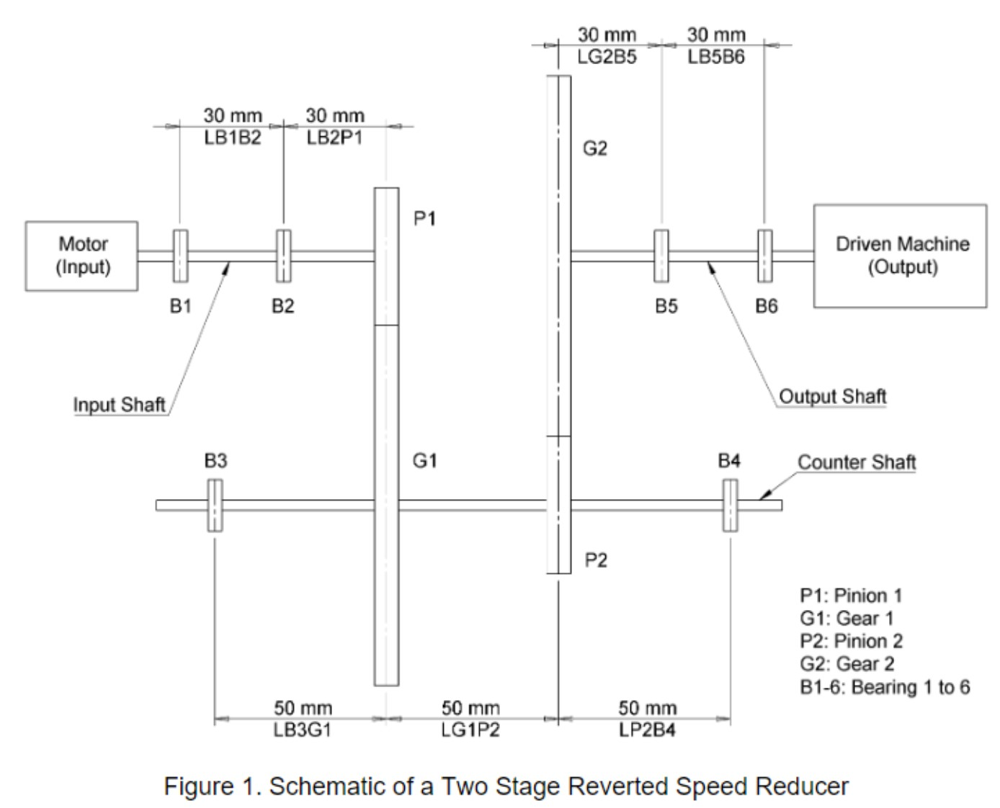
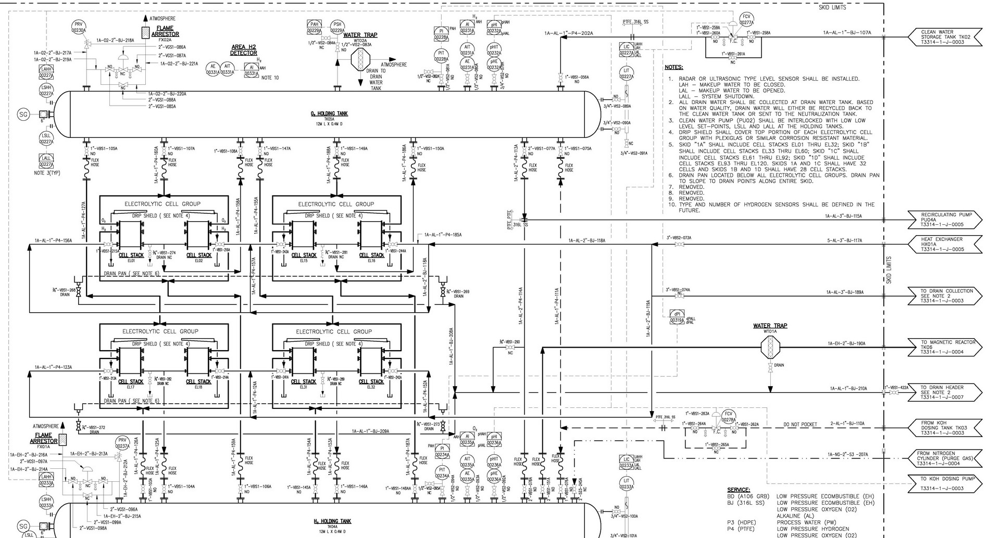

Projects
I have been involved in several projects between my schooling and work experience. My most recent non-work projects was a moped gearbox assembly design project where I worked in a team of 4 four undergraduates and research report on the use of hydrogen in steel reheat furnaces.
Independent Study
Over a semester, I explored hydrogen power in industrial steel reheat furnaces and evaluated the feasibility of hydrogen production pathways. My incentive to choose this topic is a clean energy source that can help reduce carbon emissions in energy intesive industries, such as steelmaking. Click the button to download my research paper.
DOwnLoad PDF
Moped Gearbox Assembly Design

I worked in a team of four undergraduates to conduct a stress and fatigue analysis on the shaft to determine the dimensions of the shaft and determine bearing requirements given specific design parameters.
About Me
Even when I am not studying for courses, I am always working to develop as an engineer and person.
Learn more
Project Experience

I have been involved in several projects between my schooling and work experience.
Learn more
Work Experience

I have had the privilege to work in a number of engineering internships, as well as a engine lab assistant position.
Learn more